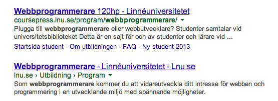
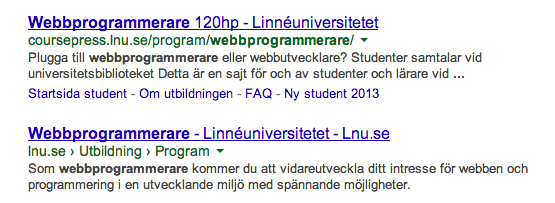
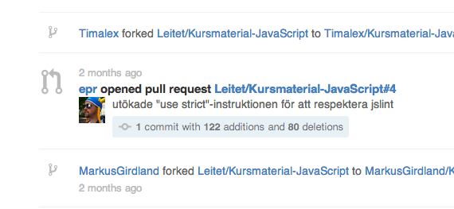
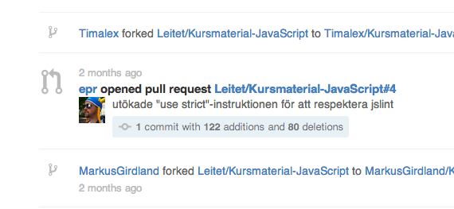

Johan Leitet
Webbprogrammerare.se
 

Ledord
"En öppen utbildning"
Positiva effekter?
Ökat söktryck (?)
Ökad insyn -> Högre kvalitet (?)
Företag och organisationer hittar oss!
Studenter behöver inte köpa grisen i säcken
Förenklad administration
Kollegial insyn
Roligt!
Reaktioner?
Varför inte?
Webbprogrammerare.se - En "öppen" utbildning
Open Source?
Forkning
 

</Tack!>
</Tack!>